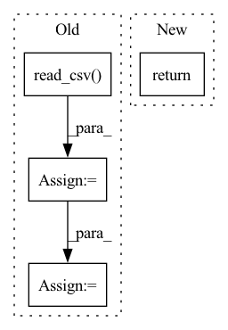

Pattern ID :10224

Before Change
df = pd.DataFrame()
for fpath in all_files:
f_df = pd.read_csv(fpath, index_col="Date Time",
encoding="unicode_escape", na_values=-9999)
f_df.index = pd.DatetimeIndex(f_df.index)
df = pd.concat([df, f_df]) // todo, such concatenation is slow.
df = df.sort_index()
if st is None:
st = df.index[0]
if en is None:
en = df.index[-1]
After Change
assert isinstance(en, int)
return df.iloc[st:en]
elif st is not None:
return df.loc[st:en]
return df
In pattern: SUPERPATTERN
Frequency: 5
Non-data size: 4
Instances
Fragment ID: 36010789
Project Name: atrcheema/dl4seq
Commit Name: 40a6dd9ce37500119adb2b855a3f287633b5fcf3
Time: 2022-06-15
Author: ather_abbas786@yahoo.com
File Name: ai4water/datasets/datasets.py
M Class Name: WeatherJena
N Class Name: WeatherJena
M Method Name: fetch(3)
N Method Name: fetch(3)
M Parent Class: Datasets
N Parent Class: Datasets
M File Name: ai4water/datasets/datasets.py
N File Name: ai4water/datasets/datasets.py
M Start Line: 528
M End Line: 572
N Start Line: 557
N End Line: 604
'>
Before Change
Categorical(categories=["gbtree", "dart"], name="booster")
]
data = pd.read_csv(fname)
inputs = list(data.columns)
inputs.remove("index")
inputs.remove("target")
inputs.remove("target_by_group")
After Change
)
opt.fit()
return
def test_dl4seq_grid(self):
run_dl4seq("grid")
print("dl4seq for grid passing")
'>
Fragment ID: 36010773
Project Name: atrcheema/ai4water
Commit Name: 90d0278853e4c9684425d65c2f33dd0c47aa4d4b
Time: 2021-03-11
Author: ather_abbas786@yahoo.com
File Name: tests/test_hyper_opt.py
M Class Name: TestHyperOpt
N Class Name: TestHyperOpt
M Method Name: test_dl4seq_bayes(1)
N Method Name: test_dl4seq_bayes(1)
M Parent Class: unittest.TestCase
N Parent Class: unittest.TestCase
M File Name: tests/test_hyper_opt.py
N File Name: tests/test_hyper_opt.py
M Start Line: 279
M End Line: 311
N Start Line: 295
N End Line: 295
'>
Before Change
train_dataset = DatasetProcessor(data, self.tokenizer,"primeqa/tableqa/preprocessors/data/sqa_1.0/")
return train_dataset
elif split=="dev":
data = pd.read_csv("primeqa/tableqa/preprocessors/data/sqa_1.0/random-split-1-dev.tsv", sep="\t")
dev_dataset = DatasetProcessor(data, self.tokenizer,"primeqa/tableqa/preprocessors/data/sqa_1.0/")
return dev_dataset
elif split=="test":
data = pd.read_csv("primeqa/tableqa/preprocessors/data/sqa_1.0/test.tsv", sep="\t")
After Change
dev_data = pd.read_csv(self.dev_dataset_path, sep="\t")
dev_dataset = DatasetProcessor(dev_data, self.tokenizer,self.data_path_root)
return train_dataset,dev_dataset
'>
Fragment ID: 36010829
Project Name: primeqa/primeqa
Commit Name: 7669f575db7dc19749ddb83d9a00461991cff535
Time: 2022-07-05
Author: vishk024@in.ibm.com
File Name: primeqa/tableqa/preprocessors/dataset.py
M Class Name: TableQADataset
N Class Name: TableQADataset
M Method Name: load_data(1)
N Method Name: load_data(2)
M Parent Class:
N Parent Class:
M File Name: primeqa/tableqa/preprocessors/dataset.py
N File Name: primeqa/tableqa/preprocessors/dataset.py
M Start Line: 46
M End Line: 69
N Start Line: 50
N End Line: 55
'>
Before Change
"booster": ["gbtree", "dart"]}
data = pd.read_csv(fname)
inputs = list(data.columns)
inputs.remove("index")
inputs.remove("target")
inputs.remove("target_by_group")
After Change
// executes bayesian optimization
opt.fit()
return
class TestHyperOpt(unittest.TestCase):
'>
Fragment ID: 36010795
Project Name: atrcheema/ai4water
Commit Name: 90d0278853e4c9684425d65c2f33dd0c47aa4d4b
Time: 2021-03-11
Author: ather_abbas786@yahoo.com
File Name: tests/test_hyper_opt.py
M Class Name: AnonimousClass
N Class Name: AnonimousClass
M Method Name: run_dl4seq(1)
N Method Name: run_dl4seq(1)
M Parent Class:
N Parent Class:
M File Name: tests/test_hyper_opt.py
N File Name: tests/test_hyper_opt.py
M Start Line: 41
M End Line: 74
N Start Line: 72
N End Line: 72